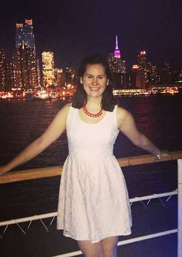
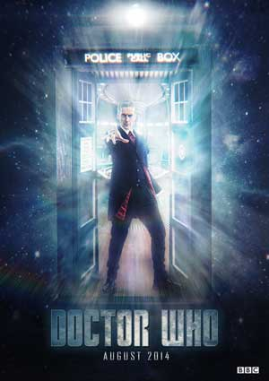

|
| Home The Doctors The Companions The Villians Show History |
|  |
Madeleine's Doctor Who WebsiteDoctor Who originally ran for 26 seasons on BBC One, from 23 November 1963 until 6 December 1989. During the original run, each weekly episode formed part of a story (or "serial") — usually of four to six parts in earlier years and three to four in later years. Notable exceptions were: The Daleks' Master Plan, which aired in 12 episodes (plus an earlier one-episode teaser,[47] "Mission to the Unknown", featuring none of the regular cast[48]); almost an entire season of seven-episode serials (season 7); the 10-episode serial The War Games;[49] and The Trial of a Time Lord, which ran for 14 episodes (albeit divided into three production codes and four narrative segments) during season 23.[50] Occasionally serials were loosely connected by a storyline, such as season 8 being devoted to the Doctor battling a rogue Time Lord called The Master,[51][52] season 16's quest for The Key to Time,[53] season 18's journey through E-Space and the theme of entropy,[54] and season 20's Black Guardian Trilogy.[55] The programme was intended to be educational and for family viewing on the early Saturday evening schedule.[56] Initially, it alternated stories set in the past, which were intended to teach younger audience members about history, with stories set either in the future or in outer space to teach them about science.[56] This was also reflected in the Doctor's original companions, one of whom was a science teacher and another a history teacher.[56]
|
|
Madeleine Schwartz Ann Marie Skjold |
Content derived from Dr. Who Wikipedia.
|